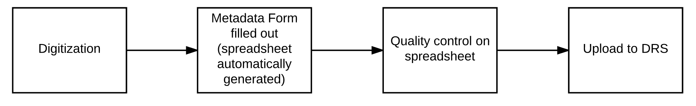

A Little Background
- Awesome digital repository
- Variety of kinds of objects
- Variety of kinds of metadata
- Users from different parts of campus
- Users with different skillsets
How to get all the things in the DRS?
And...
- Not burden the users
- Fit into existing workflows
- Improve existing workflows??
- Be specific enough but not too specific
- Open the doors for more users
IPTC Photograph Loader
- University Marketing and Marketing departments in various schools and colleges
- Zip file of JPGs
- Metadata extracted from IPTC header and translated into MODS
- ~40,000 photos to date
Multipage
- Library staff - originally designed around a specific library collection
- Zip file of images and their associated MODS XML metadata
- Loads sequential images for objects like postcards and page images
- ~1,500 photos to date
XML
Metadata + Files
- Archives and Special Collections and Library staff
- Zip file of files and MODS XML
- Loads new files with their associated metadata
XML
Metadata Only
- Archives and Special Collections and Library staff
- Zip file of MODS XML
- Replaces existing MODS XML with provided file
- ~4,000 files new + metadata only
Spreadsheet
Metadata + Files
- Archives and Special Collections and Library staff on behalf of other projects
- Zip file of files and excel file
- Loads new files with their associated metadata by transforming spreadsheet metadata into MODS XML
Spreadsheet
Metadata Only
- Archives and Special Collections and Library staff on behalf of other projects
- Zip file containing an excel file
- Replaces existing MODS XML with spreadsheet metadata transformed into MODS XML
- ~10,000 files new + metadata only
University Marketing and Communications
Before
After
Archives and Special Collections
Before
After

What we think we've accomplished
- Less technical training for staff
- Lower barrier quality control
- Minimal disruption to existing workflow
- More time spent in user's native software than in the DRS
Questions?
Advice?
Thanks!
Fork me on GitHub